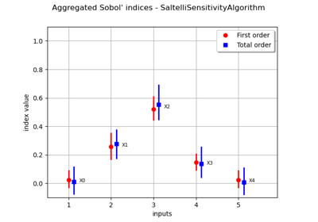

Sensitivity analysis¶



Estimate Sobol’ indices for a function with multivariate output
Estimate Sobol' indices for a function with multivariate output


Estimate Sobol' indices for the Ishigami function by a sampling method: a quick start guide to sensitivity analysis


Example of sensitivity analyses on the wing weight model
Example of sensitivity analyses on the wing weight model